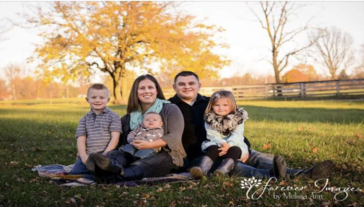

Our Story.
It isn't until you experience the death of a loved one that you fully grasp grief and the
need for grief support. Often times grief can be all encompassing leaving adults to try
to put families back together in the midst of their own grief and children without the grief
support they need.
Dustin's Place is named in memory of Dustin Cullen, a Believer who lived his life as a
testament to God's grace. Dustin loved his family and friends completely. He was the husband
of Viki (Cullen) Brown and father of Caythan, Liliana, and Dean Cullen. In 2016, Dustin was
in a single car fatal accident leaving his wife, Viki, as a young widow alone to love for,
care for, and attempt to put life back together again for their 3 young children at 6 years old,
5 years old, and 11 months old.
While they were surrounded with love from their family and friends
the need for grief support and care was evident. Viki and her children attended a children's
grief support group together and immediately felt the connection with other grieving families.
In October 2018, Viki along with some of Dustin's closest friends began the process of opening
a children's grief center in our own community. Dustin's Place was founded February 18, 2019.
Dustin's Place will provide grief support through group meetings where children and their
families can gather together with adults volunteers who through their passion have chosen to
be companions to others during their grief walks.
Our Mission.
The mission of Dustin's Place is to provide support in a safe place where grieving children,
teens, and their families can find connection and healing through sharing their experience
of the death of a loved one throughout their healing process. Dustin's Place believes that
no child or family should grieve the death of a loved one alone.
